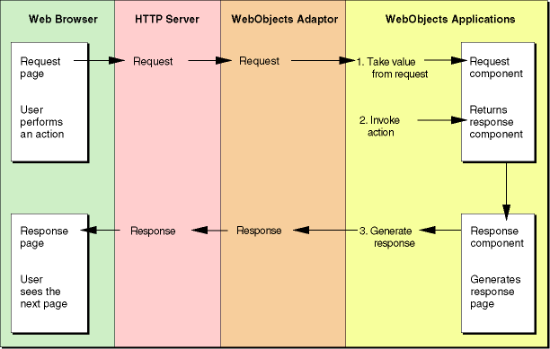
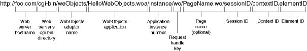

| PATH |

Each action taken by a user is communicated to your application via the Web server and the WebObjects adaptor. All the pertinent details of the user's action—the contents of text fields, the state of radio buttons and checkboxes, and the selections in pop-up menus—as well as information about the session and button or link activated is encoded in the HTTP (Hypertext Transfer Protocol) request.
The request is decoded by the action of the WebObjects adaptor and default behaviors in the application. This decoding process, which culminates in the generation of a response page to be returned to the Web browser, is called the request-response loop. See Figure 5-1.
Figure 5-1 The request-response loop
WebObjects has two request processing models: component actions and direct actions.
As Figure 5-2 shows, a component action request URL contains all the information necessary for WebObjects to reconstruct the state the session and components were in when a page was last generated for a given user. Listing 5-1 shows an example of a component action URL.
Figure 5-2 Structure of a component action URL
Listing 5-1 Example of a component action URL
http://foo.com:49663/cgi-bin/WebObjects/DateDisplay.woa/wo/NDdW3uF2xRVjvbXUgRCVM/ 0.5
Table 5-1 shows a summary explanation of the phases of the request-response process. Table 5-2 shows the order in which the methods involved are invoked. The process is explained in detail in "Processing the Request" and "Generating the Response".
Request processing takes place in three stages: awakening, state synchronization, and action invocation.
awake method.In a multi-user system, limited resources need to be used as efficiently as possible. To this end, applications are only active while they are performing a task. A single server can be running several different applications or many instances of the same application. WebObjects keeps applications asleep while they are not participating in the request-response loop. See "Generating the Response" for more information.
The application object's awake method
is invoked first, then the session's, and finally the component's.
You can customize this method in each of the classes involved to
provide logic you need to perform before processing the request.
Although the default implementations of those methods do nothing,
you should call the superclass's method before executing custom
logic, as Listing 5-2 shows.
Listing 5-2 Overriding the awake method
public void awake() {
super.awake();
/* custom logic goes here */
}takeValuesFromRequest method
is invoked, which causes the values entered in form elements by
the user to be copied into the corresponding instance variables.
If the component contains no form elements or if the values of the form
elements were not changed, this stage is not performed.WebObjects
invokes the application's takeValuesFromRequest method.
The application then invokes the session's method, which in turn
invokes the component's method. The component invokes each dynamic
element's takeValuesFromRequest method,
which causes form elements to copy the values from the request into
the appropriate component bindings. WebObjects uses the NSKeyValueCoding
interface to determine how to set the value of the binding.
To
set the value of a key named key,
WebObjects looks for an available setter method or an instance variable
in the following order:
public
void setKey()private _setKey()_keykeyinvokeAction method
is invoked; the action the user chose is executed.Like the takeValuesFromRequest method,
WebObjects invokes the application's invokeAction method.
The application then invokes the session's method, which in turn invokes
the component's method. The component then invokes the method
on each of its dynamic elements.
When the invokeAction method
of the dynamic element that triggered the request is invoked (a
submit button, for example), it in turn invokes the method bound
to its action attribute.
After the form values are gathered and the action method is invoked, the application creates a response page. This is the component returned by the action method. The response-generation process has two phases: append to response and sleep.
appendToResponse method
is invoked, so that it can add its content to the page to be displayed.WebObjects
invokes the application's appendToResponse method.
Then the application invokes the session's method, which in turn
invokes the component's method. The component goes through its
HTML code creating the page's content. When it finds a <WEBOBJECT> tag,
it invokes the corresponding element's appendToResponse method,
so that it can get the values of its binding and add the resulting
content to the page. The process continues recursively until the
entire response page has been created.
When a variable
needs to be evaluated, WebObjects uses a system much like the one
it uses when a variable needs to be set. When the value of a key
named key is requested, WebObjects
first looks for a getter method. If one is not found, it accesses
the instance variable itself. The order in which WebObjects tries
to obtain the value for key is
as follows:
public [...] getKey()public [...] key()private [...] _getKey()private [...] key()[...] _key[...] keysleep methods of the Component, Session,
and Application objects are invoked. (The order in which the objects'
sleep method is called is the opposite of the order in which the awake methods
are invoked in the awake phase.) When overriding the sleep method,
you should follow the structure in Listing 5-3.Listing 5-3 Overriding the sleep method
public void sleep() {
/* custom logic goes here */
super.sleep();
}After all the objects involved in the request-response process are put to sleep, the new page is sent to the WebObjects adaptor.
WebObjects supports the use of a Web browser's Back button (backtracking) by keeping a cache of recently viewed pages on the server. The cache is configured to hold 30 pages per session, but you can customize it to meet your needs. To change the default size of the cache, add code to the Application class's constructor. For example, to change the page cache size to 45 pages, you add this code:
setPageCacheSize(45);
When a response page is generated, it and its state information are added to the cache. That way, when the user clicks her browser's Back button, WebObjects can retrieve the correct component and its state.
For backtracking to work properly with dynamic data, a Web browser's own cache should be disabled, so that all page requests go to the Web server and, therefore, your application. You can accomplish this by adding this code to the Application class's constructor:
setPageRefreshOnBacktrackEnabled(true);
When the cache becomes full, the oldest page in it is discarded to make room to store a new page. When the user backtracks past the oldest page in the cache, WebObjects informs her of the situation with a special page.
© 2001 Apple Computer, Inc.